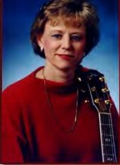

|
|
我敬拜你全能神 I Worship You Almighty God |
|
[ I Worship You Almighty God ]
|
我敬拜你，全能真神，有誰能像你？ |
|
http://gepu.shenshi777.com/uploads/allimg/141212/213110M17-0.jpg
https://musescore.com/user/30522520/scores/5619053
|
|
|
|
|


我敬拜你全能真神﹙粵語﹚I Worship You, Almighty God https://www.youtube.com/watch?v=gVF-DjjxFME -
I Worship You Almighty God Written by Sondra Corbett
https://www.youtube.com/watch?v=brSdj0WfA84 -
I Worship You, Almighty God (我敬拜祢全能神)
https://youtu.be/JKbje6MBVcY
| Text: | I Worship You, Almighty God |
| Author: | Sondra Corbett-Wood |
| Tune: | I WORSHIP YOU |
| Composer: | Sondra Corbett-Wood |
| Short Name: | Sondra Corbett-Wood |
| Full Name: | Corbett-Wood, Sondra, 1963- |
| Birth Year: | 1963 |
Tune Information
| Title: | I WORSHIP YOU |
| Composer: | Sondra Corbett-Wood |
| Meter: | Irregular |
| Incipit: | 52115 21132 16552 |
| Key: | F Major |
| Copyright: | © 1983 by Integrity's Hosanna! Music. |
https://divinehymns.com/lyrics/i-worship-you-almighty-god-song-lyrics-2/
"I Worship You Almighty God"
Artist: Leann Albrecht
Writer: Sondra Corbett-Wood, published in 1983
As a young woman, Sondra Corbett-Wood was living in Dallas, Texas,
attending Christ For The Nations Institute and playing and singing with CFNI's
music ministry. Before a service, Sondra went to the music room to pray and
spend time alone with the Lord. She remembers sensing that God was so present,
so close. And as she opened her mouth to sing, the words "I worship you,
Almighty God, there is none like you," just tumbled out. Following school,
Sondra went through a season where she drifted away from the spiritual
foundation of her life. Devastated and broken, she returned to her home in
Kentucky where her church family loved her and helped her find restoration.
Though difficult, Sondra feels that experience taught her an even deeper
appreciation for God's presence and the depths of his grace.
25 Songs That Changed The Way We Worship: Stories behind the songs
This month Kingsway released a very special various artists album. '25 Songs That Changed The Way We Worship' celebrates the huge contribution that Mobile, Alabama's Integrity Music have made to the development of contemporary worship. The two CD/DVD set offers an impressive selection of many of the world Church's most popular worship songs and recordings. Said C Ryan Dunham, president of Kingsway and Integrity Music, "These songs serve as a powerful reminder of why Integrity Music started in the first place - to share the songs of worship that give a dynamic voice to generations of worshippers worldwide, uniting us in awe of our wondrous, majestic God This is the foundation for our next 25 years and more as we are captivated by the strength of a song to connect hearts and minds." Here are the stories behind the songs.
"Open The Eyes Of My Heart"
Artist: Paul Baloche
Writer: Paul Baloche, published in 1997
While leading worship one morning, the phrase "Open the eyes of my heart" popped
into Paul Baloche's mind. "I'd heard a pastor pray that a couple of years before
and I had written it in my journal," recalls Paul. "Later, I looked into
Ephesians 1:18 and spent some time there, praying that." So as Paul was leading,
he sang out, "Open the eyes of our hearts, Lord. Open our eyes, Lord. We want to
see you." He wasn't sure of how the rest of the song came, other than that he
was thinking about Isaiah, "Lord, to see you high and lifted up." Thankfully,
Paul's sound technician was recording the service and captured the moment. "It
just felt like the sincere prayer of our hearts at that moment," Paul remembers.
"Give Thanks"
Artist: Don Moen
Writer: Henry Smith, published in 1978
In 1978 a young seminary graduate named Henry Smith was struggling to find work
and coming to terms with a degenerative eye condition that would eventually
leave him legally blind. Despite those hardships, Henry found hope in 2
Corinthians 8:9 and penned "Give Thanks," one of the most beloved songs of our
time. "And now let the weak say, 'I am strong'; Let the poor say, 'I am rich'
because of what the Lord has done." Years later, a young worship leader named
Don Moen would record Henry's song, helping to carry it around the world. Today,
you can hum "Give Thanks" at almost any church in the world, no matter the
country or the language, and someone will recognize this simple song of
thanksgiving and trust.
"Above All"
Artist: Lenny LeBlanc
Writers: Paul Baloche and Lenny LeBlanc, published in 1999
Paul Baloche didn't start out to "write" a song when the words to "Above All"
came to him. He was just spending time alone, worshiping the Lord. But as he
meditated on Jesus, the words poured out. "Lord, you are above all kingdoms,
above all thrones, above all the wonders the world has ever known." Paul
struggled for over a year to write a chorus that fit the verses. But it wasn't
until he sat down with friend Lenny LeBlanc that the song began to fully take
shape. Lenny suggested, "Crucified, laid behind a stone. . . like a rose
trampled on the ground. . ." and suddenly they realised that something wonderful
was coming together. By the time they had written "You took the fall and thought
of me. . . above all," they were in tears.
"I Exalt Thee"
Artist: Pete Sanchez
Writer: Pete Sanchez, published in 1977
As a young husband and father, Pete Sanchez was seeking guidance and studying
the Psalms. While meditating on Psalm 97:9, he was struck by the beauty and
power of the verse, "For thou, Lord are high above all the earth." Wanting to
capture this praise in song, he went to the piano and began writing. But he
couldn't seem to finish it. For well over a year, he struggled to complete the
song but just couldn't find the right words. Then, out of the blue, the chorus
came to him. This simple song of praise, and personal cry from a worshiper's
heart, is now sung by believers around the world.

"Be Magnified"
Artist Randy Rothwell
Writer: Lynn DeShazo, published in 1992
One morning in late 1990, Lynn DeShazo picked up her guitar, strummed a chord
and sang, "I have made you too small in my eyes, O Lord, forgive me," the
opening lyric to her beloved song "Be Magnified". Though startled and not sure
of where the words came from, Lynn immediately realised that she had stumbled
upon something special. She finished writing the song in early '91 and began
sharing it with churches. People responded immediately to this song of praise
that flowed from a broken and contrite spirit. "I have leaned on the wisdom of
men. O Lord, forgive me."
"Shout To The Lord"
Artist: Darlene Zschech
Writer: Darlene Zschech, published in 1993
Some of the most moving songs of praise are often birthed from times of despair.
Such was the case with "Shout To The Lord". While going through a difficult time
and desperate for the peace of God, Darlene Zschech sat down at her old piano,
the same one she'd had since she was five years old. She turned to Psalm 96 and
without setting out to do so, she penned one of the Church's most well-known
praise songs in about 20 minutes. Though she had been writing songs since her
teens, Darlene never considered herself a songwriter. And it was with
trepidation that she shared the song with her church. But the response was
immediate and the song quickly travelled around the globe, giving believers new
words to express their hearts to God.
"God Will Make A Way"
Artist: Don Moen
Writer: Don Moen, published in 1990
After learning that his young nephew was killed in a car accident, Don Moen
searched for some way to help bring comfort to his grieving family even as he
struggled with his own sorrow. While reading Isaiah 43, he asked God to give him
something that would bring hope to the family in the middle of a hopeless
situation. As he prayed, the words for "God Will Make A Way" came to mind. "He
works in ways we cannot see, He will make a way for me." For a while, that song
remained a private message for his family. But slowly, he began sharing it with
others and soon found that it was a message for the whole Church. A message to
cling to when "there seems to be no way."
"There Is None Like You"
Artist: Lenny LeBlanc
Writer: Lenny LeBlanc, published in 1991
In the late '80s, Lenny LeBlanc, formerly of the hit-making duo LeBlanc & Carr
known for their pop single "Falling", began writing songs for his local church.
He also began recording with Integrity Music. While working on the album 'Pure
Heart', Lenny found himself on a deadline to pen new songs for the project.
Ordinarily when writing, Lenny says he would play the piano, humming along to
stir up ideas. But one morning, as he sat down to work through the process, he
immediately started singing the words "there is none like you." Lenny took a
break from writing, mulling over this new song and wondering if he might be on
to something. When he went back to the studio and began playing it again, the
weight of the words hit him. Lenny recalls weeping, not only because of the
lyrics, but also in thankfulness that God had given him the song.
"I Worship You Almighty God"
Artist: Leann Albrecht
Writer: Sondra Corbett-Wood, published in 1983
As a young woman, Sondra Corbett-Wood was living in Dallas, Texas, attending
Christ For The Nations Institute and playing and singing with CFNI's music
ministry. Before a service, Sondra went to the music room to pray and spend time
alone with the Lord. She remembers sensing that God was so present, so close.
And as she opened her mouth to sing, the words "I worship you, Almighty God,
there is none like you," just tumbled out. Following school, Sondra went through
a season where she drifted away from the spiritual foundation of her life.
Devastated and broken, she returned to her home in Kentucky where her church
family loved her and helped her find restoration. Though difficult, Sondra feels
that experience taught her an even deeper appreciation for God's presence and
the depths of his grace.
"Awesome In This Place"
Artist: Kent Henry
Writer: David Billington, published in 1992
"As I come into your presence, Past the gates of praise. . ." Some songs are so
simple, yet so rich in vertical expression. David Billington's "Awesome In This
Place", which was featured on the album 'The Secret Place' with worship leader
Kent Henry, is one of those songs. The song draws from Psalm 22:3, which tells
us that God is enthroned on our praises. And now, thanks to Jesus, we are no
longer dependent on the high priest who enters the outer court on our behalf
with a sacrifice. Rather, we may now enter his courts with a sacrifice of praise
and behold our God "face to face."
"Ancient Of Days"
Artist: Ron Kenoly
Writers: Jamie Harvill and Gary Sadler, published in 1992
As writers Jamie Harville and Gary Sadler were working in a converted studio at
Jamie's house, they were inspired by the description of God as the "Ancient of
Days" from Daniel 7:22. Gary had already decided upon the title for the song and
a basic verse melody, and Jamie had been listening to a South African artist who
inspired him to pursue the ethnic drum patterns in the song. Following the
song's completion in 1991, it was featured on a live recording by Ron Kenoly.
Jamie remembers being at the recording with his family and parents and seeing
the look of pride and wonder on his mother's face as they performed the song, a
memory he'll never forget. He knew at that moment that his music lessons had
paid off and a songwriting career had begun.
"Days Of Elijah"
Artist: Robin Mark
Writer: Robin Mark, published in 1996
In late 1994, Robin Mark watched a recap of the year's news stories, including
the horrific Rwandan genocide, and was struck by despair over the state of the
world. As he prayed, he felt assurance that God was very much in control. But he
also sensed that we are living in a season that would require Christians to be
filled with integrity, taking a stand for God as Elijah had. Drawing from the
Old Testament, he examined the virtues and attitudes we would need in such days
- righteousness, justice, revival, unity, worship and praise. "It is in essence
a song of hope for the Church and the world in times of great trial," says
Robin. "The chorus is the ultimate declaration of hope - Christ's return."
"Hosanna"
Artist: Paul Baloche
Writer: Paul Baloche and Brenton Brown, published in 2006
Paul Baloche says the song "Hosanna" was birthed while he and fellow songwriter
Brenton Brown were thinking about Palm Sunday. They visualised Jesus seated upon
a donkey, entering Jerusalem as the crowds cast down their cloaks and branches
before him, shouting "Hosanna." Paul said they meditated on this tableau
compared with our own sense of excitement and expectancy as we enter into
worship. Like the crowd that day in Jerusalem, we come before the Lord, crying
"Hosanna" as we celebrate our Saviou, the oe who is "worthy of all our praises."
"Friend Of God"
Artist: Lakewood Church
Writers: Israel Houghton and Michael Gungor, published in 2003
"And the Scripture was fulfilled which saith, 'Abraham believed God, and it was
imputed unto him for righteousness': and he was called the Friend of God." -
James 2:23 Co-writer Israel Houghton has said that "Friend Of God" is a song
that has deeply impacted him. Recalling the writing process with Michael Gungor,
Israel says they were "blown away" as the lyrics hit them. "It's one thing for
us to call God our 'friend'," says Israel. "But when you are singing, 'He calls
me friend' and you begin to really understand how he sees you. . . that's
powerful."
"Love The Lord"
Artist: Lincoln Brewster
Writer: Lincoln Brewster, published in 2005
At the suggestion of a friend, Lincoln Brewster decided to write some songs
inspired by the corresponding Scriptures from Pastor Rick Warren's 40 Days Of
Purpose sermons. Lincoln began with the topic of worship and drew directly from
Luke 10:27, "Love the Lord your God with all your heart and with all your soul.
. ." Though at first he wasn't sure of the strength of the song, he played it
for his church and discovered that people connected immediately. So he began
playing the song whenever he was on tour or visiting other churches and the
reaction was the same. "It's simple, it's memorable. . . it's truth," said
Lincoln.
"Your Name"
Artist: Paul Baloche
Writer: Paul Baloche and Glenn Packiam, published in 2006
While visiting New Life Church in Colorado Springs, Paul Baloche suggested that
he and Glenn Packiam, a songwriter and associate pastor at New Life, connect for
a writing session. "There really wasn't a place for us to meet except in the
nursery," recalls Glenn. So, there they sat in the nursery, with a beautiful
view of the mountains but with the very present smell of a church nursery. Glenn
shared with Paul a message that he'd given recently that was drawn from Psalm 65
about rediscovering awe and living in wonder. Then the two worshipped for a
while. Glenn read the Scripture and almost immediately, the song poured out.
Though that was the first time the two had written together, it was the
beginning of many writing sessions that would birth numerous new songs for the
Church.
"Lord Have Mercy"
Artist: Eoghan Heaslip
Writer: Steve Merkel, published in 2000
Before the Berlin Wall came down, Steve Merkel spent time in Poland ministering
with Catholic believers. It was a season that opened his heart to the beauty of
liturgy and the richness of our shared faith. When he returned home, he often
led worship at his local charismatic church on Sundays and at Catholic services
during the week. Along the way, it became clear to Steve that both streams
needed the other. So while working on a liturgical worship album for Integrity
Music in the late '90s, Steve was inspired to write a "Kyrie for the Common
Man." "I dropped the bucket down into the well of my life and truly documented
the things for which I needed the mercy of the Lord," says Steve. "'Lord Have
Mercy' became the musical setting formed from the prayers that came up from that
well."
"Healer"
Artist: Kari Jobe
Writer: Mike Gugliemucci, published in 2007
So many great worship songs are simply declarations of truth, lyrics that cause
us to sing God's promises over ourselves. The song "Healer" is one of these.
Isaiah 53 tells us that Jesus "bore our transgressions. . . the punishment for
our peace was upon him and by his stripes we are healed." "Healer" touches on
the core of what we are promised through relationship with Christ. Not only does
singing these truths touch our spirits, they are a witness to others. "Jesus
you're all I need. . . Nothing is impossible for you."
"Today Is The Day"
Artist: Lincoln Brewster
Writer: Paul Baloche and Lincoln Brewster, published in 2008
Following a music conference at his church in California, Lincoln Brewster
invited friend Paul Baloche to stay over so that the two could spend some time
writing. The following morning as they lingered over breakfast in the Brewster's
kitchen, Lincoln reminded Paul of a verse, I'm casting my cares aside, I'm
leaving my past behind, that Paul had shared with him years earlier as they were
working on another song. "I loved this verse. . . I always liked that thought
process and those lyrics and the melody," recalls Lincoln who suggested they use
it to craft a new version of the classic song, "This Is The Day". The result is
an up-tempo reminder to live in the present, trusting the sovereignty of God.
"I Am Free"
Artist: New Life Worship
Writer: Jon Egan, published in 2004
For years, Jon Egan struggled with anxiety and depression. After a particularly
difficult struggle with anxiety over his ability to lead worship, he found
himself once again asking God for freedom from fear. But this time, he
distinctly heard God tell him, "You are free. . . look to the cross and open
your eyes." Jon recalls hearing God tell him to quit focusing on his fears and
instead focus on who he said Jon was, not who Jon thought he was. As this truth
settled into Jon's spirit, he picked up his guitar and decided that rather than
singing about how he wanted to be free, he would instead declare the truth that
he IS free!
"Trading My Sorrows"
Artist: Darrell Evans
Writer: Darrell Evans, published in 1998
The inspiration for "Trading My Sorrows" came to Darrell Evans as his band
played softly during a time of prayer at his church. As people came to the
altar, Darrell thought about what we bring to the cross and what we leave with
in exchange. And he sang out: "I'm trading my sorrow, I'm trading my shame. I'm
laying them down for the joy of the Lord." Darrell says his band began to play
along. And though the moment had begun as a sombre one, the music took on a
celebratory feel as the worshippers were overcome with joy as they too sang out
about this divine exchange. Darrell later took those initial lyrics and,
inspired by 2 Corinthians 4:8-9 and Psalm 30:5, he finished the song.
"You Are Good"
Artist: Lakewood Church
Writer: Israel Houghton, published in 2001
Born to an unwed teenage mother whose parents had urged her to have an abortion,
Israel Houghton could easily have become a statistic, but for the goodness of
God. Eight months into her pregnancy and abandoned by her family, Israel's
mother met Jesus on a street corner when a complete stranger walked up to her
and shared the Gospel. That "chance" encounter radically changed his mother's
life and his own. So when Israel penned "You Are Good", drawing from Psalm 100,
he did so from a very personal place. He knows the radical goodness, love and
mercy of God.
"Revelation Song"
Artist: Gateway Worship
Writer: Jennie Lee Riddle, published in 2004
Jennie Lee Riddle traces the inspiration for "Revelation Song" back to the
classic Gerrit Gustafson song "I Hear Angels". Jennie loved the picture of
heavenly worship in Gerrit's song and for years sang it over her children as a
lullaby. One day, while caring for her son and thinking about that imagery, she
asked the Holy Spirit to help her write a song that painted a picture of
creation worshipping around the throne. Recalling Ezekiel 1:26-28 and Revelation
4, Jennie put her son down to play and picked up the guitar she had only just
learned to play. And out poured the words, "Clothed in rainbows of living color,
flashes of lightening, rolls of thunder." Jennie shared the song with her local
church and from there it quickly spread to the global Church.
"My Saviour Lives"
Artist: New Life Worship
Writers: Jon Egan & Glenn Packiam, published in 2006
While teaching about collaboration at a songwriters' retreat, Jon Egan and Glenn
Packiam discovered that they each had a section of a song that was incomplete.
So Jon and Glenn, who are close friends and co-workers at New Life Church in
Colorado Springs, Colorado, began the work of putting the two sections together.
Rarely is a song written in such a fashion. It seemed that God was burning the
same message in each of their hearts, a persuasive testament to the strength of
a team.
"How He Loves"
Artist: John Mark McMillan
Writer: John Mark McMillan, published in 2005
In November 2002, while in a Jacksonville, Florida, to record a new album, John
Mark McMillan received word that one of his closest childhood friends had died
following a car accident. John Mark was devastated. "I had pages of dialogue
with God in the days that followed, some angry, mostly confused, but also I
wrote a lot of songs," he says. The first song from that season, much of it
written the day after the accident, was the song "How He Loves". John Mark says
the song was every bit a "tribute to a friend, a cry for understanding, and the
worship that resulted from it all."
https://www.crossrhythms.co.uk/articles/music/25_Songs_That_Changed_The_Way_We_Worship_Stories_behind_the_songs/48901/p2/